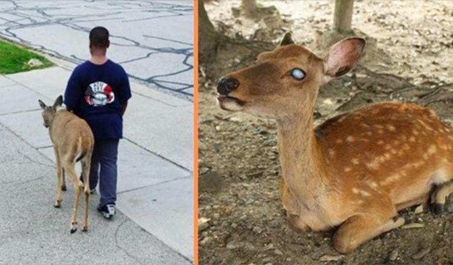

Every Day A Boy Helps Blind Deer Find Food Before School

This is the heartwarming story of a little boy who gave up some of his precious day to help an animal in need, writes kingdomstv. A picture was recently shared on social media showing a boy walking beside a blind deer in the state of Illinois.

Itâs rather uncommon to see a human standing so close to a timid animal. The story behind this picture is pretty damn amazing. Unfortunately, in nature, this poor deer wouldnât have a chance at survival. This kid has given the animal a second chance, and it has moved us. Every morning, before the boy goes to school, he helps the deer find a place to eat and rest. He takes him from one patch of grass to another, guiding him safely along the way.

âThere is a blind deer in our neighborhood and this boy (10 yrs old) walks her from one grass patch to another every day before school to make sure she finds foodâ Eventually, the news reached a local rescue centre, who are now taking care of the deer so he can live in safety.

âThe deer is getting picked up today by a local animal rescue group (NOT animal control) and taken to a vet for assessment. It will likely be tagged and taken to a controlled forest preserve but they did say that since she seemed so docile that she might end up in an approved farm or petting zoo.â It may not be the exact same as the wild, but with the deer in itâs condition, this is certainly the better of options. Thankâs to one selfless little boy, the deer is being given a second chance to live a happy life. This story originally appeared on kingdomstv.com